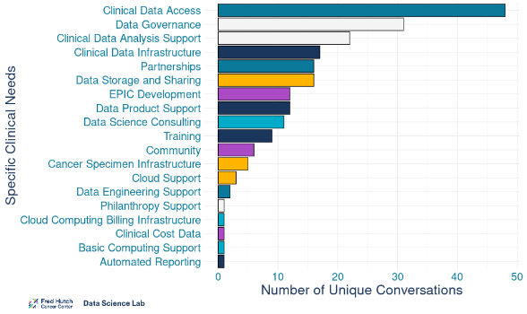
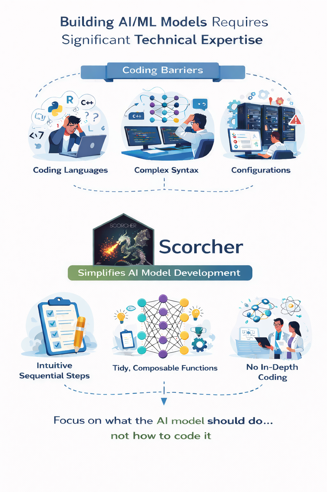
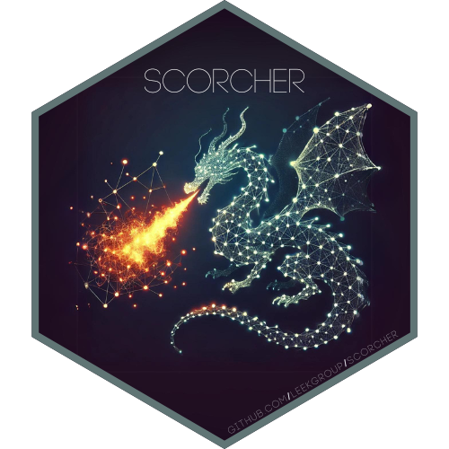
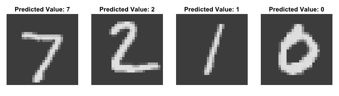
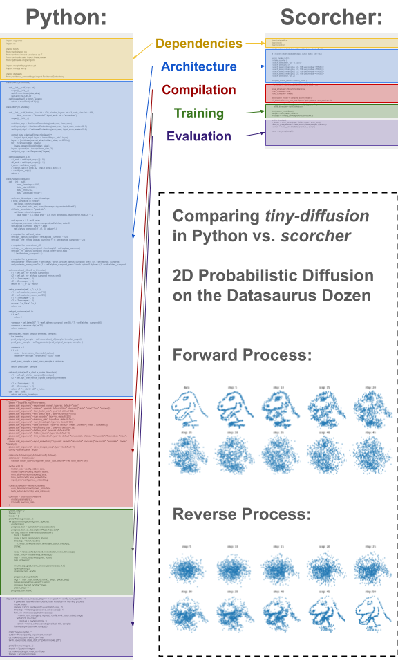
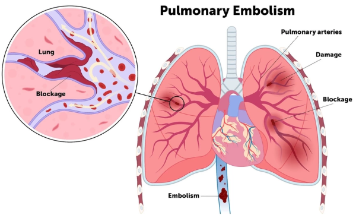
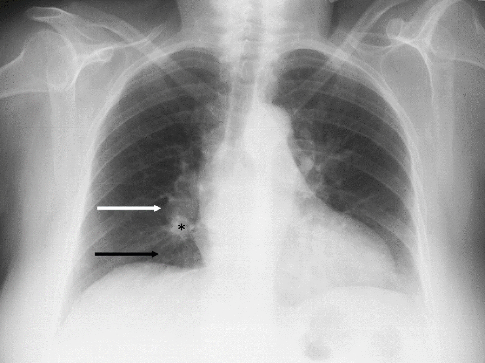
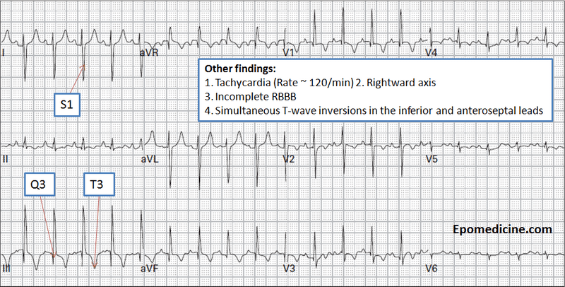
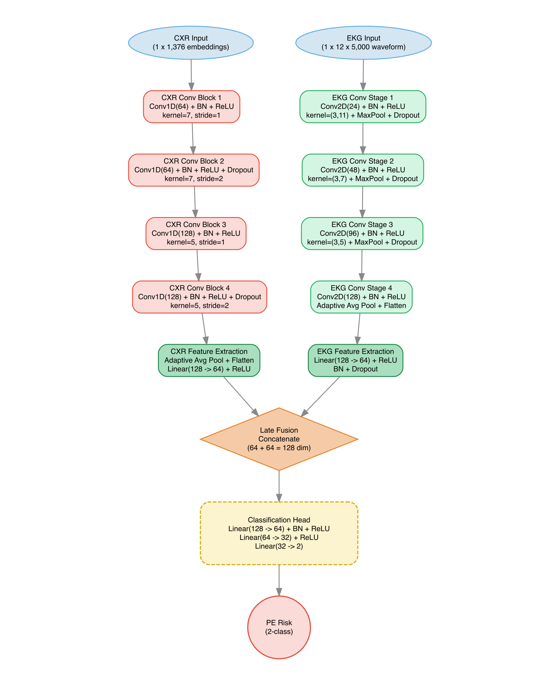

library(scorcher)
dl <- scorch_create_dataloader(x_train, y_train, batch_size = 500)
scorch_model <- initiate_scorch(dl) |>
scorch_input("x") |>
scorch_layer("conv1", conv2d, 1, 32, 3) |>
scorch_layer("act1", relu) |>
scorch_layer("conv2", conv2d, 32, 64, 3) |>
scorch_layer("act2", relu) |>
scorch_layer("pool1", max_pool2d, 2) |>
scorch_dropout("drop1", p = 0.25) |>
scorch_flatten("flat1") |>
scorch_layer("fc1", linear, 9216, 128) |>
scorch_layer("act3", relu) |>
scorch_layer("fc2", linear, 128, 10) |>
scorch_output("fc2") |>
compile_scorch(
loss_fn = nn_cross_entropy_loss(),
optimizer_fn = optim_adam,
optimizer_params = list(lr = 0.001)) |>
fit_scorch(num_epochs = 10, verbose = TRUE)scorcher
An R Package to Democratize Building and Fitting
Torch Deep Learning Models
Stephen Salerno, PhD
Fred Hutchinson Cancer Center
March 16, 2026
First, Some Acknowledgements
Awan Afiaz, MS
PhD Student
Public Health Sciences, Fred Hutch
Biostatistics, University of Washington
Barbara Lam, MD
Assistant Professor
Clinical Research Division, Fred Hutch
Hematology-Oncology, UW Medicine
Jeff Leek, PhD
Vice President and Chief Data Officer
Professor, Biostatistics Program
J. Orin Edson Foundation Endowed Chair
Public Health Sciences, Fred Hutch
Biostatistics, University of Washington
Background: Survey of Institutional Data Needs
213 conversations, spanning 1,200 hours, from 319 individuals

Source: https://hutchdatascience.org/news/NeedsAssessmentv1/
Critical need for better ‘off-the-shelf’ AI/ML research tools
Building AI/ML models requires significant expertise
- Fluency in multiple programming ecosystems
- Understanding framework-specific machine learning syntax
- Managing computational infrastructure
But implementing AI/ML is not the same skill as understanding it.

Why scorcher?
Goal: A user-friendly deep learning framework in R
We are building:
- A high-level API for native R torch
- Functional modular model components
- Reproducible end-to-end workflows
- Designed for researchers with limited coding experience

What inspired scorcher’s design
And where/why we deviate
Inspired by:
We are creating:
An API for functional model graphs, multi-input/output models, nonlinear topologies
Write models like sentences via composable functions
scorcher lets you develop models by focusing on what the model should do, not how to write code for it
Load the data
scorch_dataloader()
then
|>
add layers
scorch_layer()
then
|>
compile the model
compile_scorch()
then
|>
fit the model
fit_scorch()
This keeps architectures explicit and readable …
MNIST CNN in 20 lines w/ scorcher

- Data: 70k grayscale handwritten digits, from 0 to 9
- Goal: Classify images into categories (0-9)
- Result: Test accuracy of 98.56% after 10 epochs
… even for complex architectures
Example Diffusion Model w/ the Datasaurus Dozen
- Task: Generate an image of a T-Rex from random noise
- Result: Scorcher produces model with 85% less code
- Benefit: Scorcher code is:
- Human-readable
- Easy to explain and reproduce
- No prior knowledge of Torch syntax

A Clinical Example
We are piloting scorcher for clinical research
Multimodal pulmonary embolism risk prediction
- 3rd most common cause of cardiovascular death
- Screening relies on subjective decision rules
- Gold standard CTPA is expensive, involves radiation, and is not always readily available

Medical imaging provides a potential alternative
Objective, standardized, available before clinical probability is formally assessed


Preliminary study using MIMIC-IV7
886 adult patients undergoing CTPA for PE with CXR and EKG < 48 hr before CTPA
- 212 PE+ (23.9%) classified by clinical review of CTPA reports
- CXR: 1,376-dimensional embeddings from EfficientNet-L2 pre-trained on chest radiographs
- EKG: Raw 12-lead waveform data (5,000 samples/lead, 500 Hz)
- Stratified 70/15/15 (train/test/validation), prioritizing sensitivity for screening
Fusion CNN model
A common model structure in biomedical applications
- Modality-specific arms
- Join (concatenate) embeddings
- Shared subnetwork
- Output risk score
93.9% Sensitivity (Revised Geneva: 91%),8 22.5% Specificity, 0.48 AUPRC (2x baseline)

Next steps
What we’re building toward:
- A more mature functional graph-based API
- Support for chained pipelines/workflows (e.g., segmentation -> classification -> prediction)
- Infrastructure for distributed/federated learning
- Better evaluation helpers
- Better interoperability with the mlverse
- Reproducible artifacts (e.g., serialized configs/checkpoints, run logs, architecture diagrams)
Open source collaboration is the fastest path to success
Train -> predict -> evaluate, all inside one reproducible R pipeline
Deep learning infrastructure improves fastest when:
- APIs are shaped by real use cases
- Features emerge from community needs
- Bugs are found early, in diverse environments
If this interests you:
- Try scorcher in your own research
- Open issues and let us know your experience
- Help us define evaluation standards
:::
Thank You!
NEED !! QR FOR THIS TALK!!!
Scorcher Repo: https://github.com/jtleek/scorcher
References
1.
Gulli, A. & Pal, S. Deep Learning with Keras. (Packt Publishing Ltd, 2017).
2.
Chollet, F., Kalinowski, T. & Allaire, J. J. Deep Learning with r. (Simon; Schuster, 2022).
3.
Chowdhry, A. K. Deep learning and scientific computing with r torch. (2025).
4.
Silva, B. V., Marques, J., Menezes, M. N., Oliveira, A. L. & Pinto, F. J. Artificial intelligence-based diagnosis of acute pulmonary embolism: Development of a machine learning model using 12-lead electrocardiogram. Revista Portuguesa de Cardiologia 42, 643–651 (2023).
5.
Wysokinski, W. E. et al. Electrocardiogram signal analysis with a machine learning model predicts the presence of pulmonary embolism with accuracy dependent on embolism burden. Mayo Clinic Proceedings: Digital Health 2, 453–462 (2024).
6.
Somani, S. S. et al. Development of a machine learning model using electrocardiogram signals to improve acute pulmonary embolism screening. European Heart Journal-Digital Health 3, 56–66 (2022).
7.
Johnson, A. E. et al. Author correction: MIMIC-IV, a freely accessible electronic health record dataset. Scientific data 10, 31 (2023).
8.
Lucassen, W. et al. Clinical decision rules for excluding pulmonary embolism: A meta-analysis. Annals of internal medicine 155, 448–460 (2011).
No object-oriented programming required
Here is an example ‘simple’ CNN for MNIST
library(torch)
library(torchvision)
train_dl <- dataloader(train_ds, batch_size = 32, shuffle = TRUE)
test_dl <- dataloader(test_ds, batch_size = 32)
net <- nn_module(
"Net",
initialize = function() {
self$conv1 <- nn_conv2d(1, 32, 3, 1)
self$conv2 <- nn_conv2d(32, 64, 3, 1)
self$dropout1 <- nn_dropout2d(0.25)
self$dropout2 <- nn_dropout2d(0.5)
self$fc1 <- nn_linear(9216, 128)
self$fc2 <- nn_linear(128, 10)
},
forward = function(x) {
x <- self$conv1(x)
x <- nnf_relu(x)
x <- self$conv2(x)
x <- nnf_relu(x)
x <- nnf_max_pool2d(x, 2)
x <- self$dropout1(x)
x <- torch_flatten(x, start_dim = 2)
x <- self$fc1(x)
x <- nnf_relu(x)
x <- self$dropout2(x)
output <- self$fc2(x)
output
}
)
model <- net()
device <- if(cuda_is_available()) "cuda" else "cpu"
model$to(device = device)
optimizer <- optim_sgd(model$parameters, lr = 0.01)
epochs <- 10
for (epoch in 1:10) {
pb <- progress::progress_bar$new(
total = length(train_dl),
format = "[:bar] :eta Loss: :loss"
)
train_losses <- c()
test_losses <- c()
coro::loop(for (b in train_dl) {
optimizer$zero_grad()
output <- model(b[[1]]$to(device = device))
loss <- nnf_cross_entropy(output, b[[2]]$to(device = device))
loss$backward()
optimizer$step()
train_losses <- c(train_losses, loss$item())
pb$tick(tokens = list(loss = mean(train_losses)))
})
with_no_grad({
coro::loop(for (b in test_dl) {
model$eval()
output <- model(b[[1]]$to(device = device))
loss <- nnf_cross_entropy(output, b[[2]]$to(device = device))
test_losses <- c(test_losses, loss$item())
model$train()
})
})
cat(sprintf("Loss at epoch %d [Train: %3f] [Test: %3f]\n",
epoch, mean(train_losses), mean(test_losses)))
}This requires:
- Defing modules and mutable objects by hand
- Writing custom forward methods and training loops
- Relying on PyTorch inheritance conventions
Fit separate CNNs on each modality
CXR Only
3,590 embeddings, 8.4% prevalence
AUPRC of 0.20 (2.4x baseline)
Sensitivity of XYZ
Specificity of XYZ
EKG Only
2,925 records, 23.5% prevalence
AUPRC of 0.392 (1.7x baseline)
Sensitivity of 88.5%
Specificity of 20.9%

2026 ENAR Spring Meeting · Indianapolis, IN